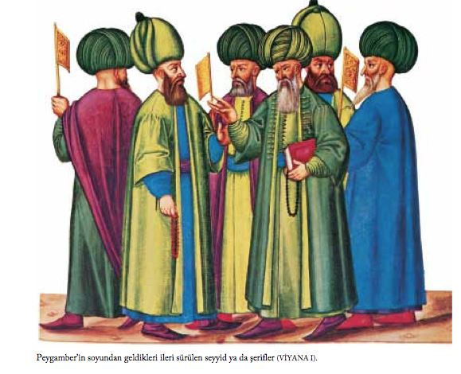
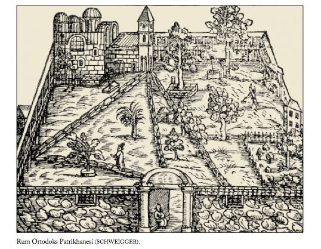

Dervişler ve Din Adamları
Dilenci kılığında yarı meczup fakirler ülkenin her yerinde görülebilirdi. Türkler, tüm yarı meczup kimselerin Tanrı ’ya daha yakın olduğuna inanırlardı. Hemen hemen her köşe başında dilenen fakirler, yalınayak, belden yukarıları çırılçıplak dolaşırlar, sadece alt kısımlarına tüyleri dışarı doğru gelecek biçimde koyun postu sararlardı. Bunlar, şiş ve iğneleri kendi bedenlerine batırırlar, kendi kendilerine Tanrı aşkına işkence ederlerdi. Gerek İstanbul ’da, gerekse Anadolu ’da bol rastlanan bu garip insanlar genellikle sığındıkları tekkelerde yer, içer, yatarlardı.
Bunlardan bir tanesi, o dönemde İmparatorluk elçiliğinin bulunduğu sokağın köşesinde gördüğü ağzına kadar darı dolu bir sandığa dalar ve günlerce burayı kendisine konut beller, burada uyur, çıplak bedenini burada ısıtır. Yoldan geçenler kendisine yiyecek getirir, onu gören başka fakirler de sandığın çevresinde onunla sohbete ve burada konaklamaya başlarlar.
Dernschwam, bu yarım akıllı kimselerin çoğunun, onun bunun acıyıp getirdiği yemekleri yemekten bazen bir domuz gibi semirdiklerini, bazılarının da, kendinden geçinceye kadar şarap içtiğini söyler.
Âşık da denen bu garip insanların çoğu, bağlı oldukları tarikatları, üzerlerine sardıkları postlara bağladıkları ipek, keten paçavralarla, ay yıldız biçimi altın, gümüş nesnelerle, metal parçalarıyla vb. belirtirlerdi. Bunlar, özellikle kasım ayında, tek sıra halinde sokaklarda dolaşır, başlarındaki adam yüksek sesle dualar okuyarak, ötekiler de koro gibi onun söylediklerini tekrarlayarak dört-beş gün böylece gezinirlerdi.
Dernschwam ’a bu yürüyüşün, Hz. İshak ’a karşı bir bağlılık gösterisi olduğunu ve buna da, Berberîlerde kutsal çorba anlamına gelen âşûre dendiği söylenir. Bu tek sıra halindeki dualı yürüyüşün bir amacı da, sadaka toplayarak kış aylarında aç kalmamak içindi. Bir derviş öldüğü zaman mezarına imâmlar bakar, başında sürekli olarak bir mum yanardı [DERNSCHWAM 117-120].
Müslümanlar dört ayrı gruba ayrılıyordu. Türkçe ’de bunlara Geomalers (Câmîler), Kalenderler, Dervişler (Abdallar) ve Torlaklar deniyordu.
Geomalers (Câmîler) gezici hacılardı. Nicholay bunları, zengin ailelerden gelen çok yakışıklı genç erkekler olarak tanımlıyor. Bunlar dinsel görünüşleri altında başkalarının paralarını seyahatlerde harcayan mutlu insanlardı. Kolsuz, eflatun, diz altına uzanan giysiden başka bir şey giymez, bellerine uzun, enli ipek bir kuşak bağlarlardı. Nicholay bunların ahlâksızlıklarıyla ünlü olduklarını söylüyor [NICHOLAY 99b].
Kalenderler, Geomalers ’den (Câmîler) farklıydı. Çünkü bunlar yoksulluk ve iffet üzerinde duruyorlardı. Tekke denen küçük manastırlarda yaşıyor, buralarda Nerzimi ’nin (Nesimî) yazdığı şarkı ve şiirleri okuyorlardı. Nerzimi (Nesimî), kendi mezheplerinin ilk aziz ve şehidi idi. Muhammed ’in yasaklarına karşı çıktığı için canlı canlı derisi yüzülmüştü. Kalenderler kolsuz yün ve at kılından yapılmış bir giysi giyerlerdi. Geomalers (Câmîler) gibi saçlarını uzatmaz, aksine kısacık keser ve geniş alınlarında bir karış uzunluğunda at kılından yapılmış iplikler sarkardı. Boyunlarına, kollarına kulaklarına ağır demir halkalar takılmış olarak gezerlerdi. Tahriklere kapılmamak için penislerini deldirdip demir veya gümüş halka takarlardı [NICHOLAY 101b].

Dervişler (Abdallar) garip ve yabansıydı. Aldatmaca, hırsızlık ve cinayetle ün salmışlardı. Kafaları usturaya vurulmuştu. Şakakları dağlanmıştı. Kulakları delinmişti. Kulaklarına çok güzel, yeşile benzer taştan halkalar takarlardı. Kış ve yaz keçi veya kuzu postunun altında çıplak gezerlerdi. Bu deriler yalnızca önlerini ve arkalarını kapamaya yarıyordu. Kentler dışında küçük kasaba ve köylerde yaşar, yaz boyunca kutsal olduklarını söyleyerek ordan oraya gezerler ve her tür kötülüğü de ederlerdi ki bunlardan biri de oğlancılıktı. Kemerlerinde gizledikleri ufak balta ile savunmasız gezginlere saldırır, onların mallarını ellerinden alır, hattâ onları öldürürlerdi. Tanrısal olduklarını göstermek için matlah denilen bir tür ot yerlerdi. Bu ot onların delirmesine neden olur, bu haldeyken kendi boyunlarını, karınlarını ve kalçalarını bıçak ya da ustura ile keserlerdi. Yaraları iyileşene dek korkunç acılara inanılmaz bir güçle katlanırlardı. Bu dervişler büyük yalancıydılar. Ama sıradan insanlar onlara saygı duyuyordu. Ali adına topladıkları para ile yaşarlardı. Diğer bir azizleri de Seyyid Battal ’dı.
Nicholay, bu dervişlerin İstanbul ’da hoş karşılanmadıklarını yazıyor. Çünkü çok değil bir süre önce bunlardan biri Sultan II. Mehmed ’i öldürmeye kalkışmıştı. Ama Türkler yardımseverliğe öylesine önem veriyorlardı ki bunlara para vermeden edemiyorlardı [NICHOLAY 102b; 102a].
Torlaklar, denildiğine göre dervişler (abdallar) gibi çıplaklıklarını keçi ya da koyun postuyla kaparlardı. Ama bunların üzerine de büyük bir ayının postunu pelerin gibi giyerler, ayının pençelerini de omuzlarından birbirine bağlarlardı. Onlar da şakaklarını dağlarlardı. Kolları ve bacakları çıplaktı ama başlarına yüksek, silindir biçiminde beyaz keçeden pilili şapka takıyorlardı. Okuma, yazma bilmezlerdi. Yaptıkları yararlı bir iş de yoktu. Bahşişle yaşarlar, sık sık hamamlara, meyhânelere ve insanların toplandıkları yerlere giderlerdi. Genellikle kalabalık olarak dolaşırlar ve dervişler (abdallar) gibi yolculara saldırıp onları soyarlardı. Halk, Torlaklar ın kehanet gücü olduğuna inanırdı. Özellikle sıradan kadınlar bunlara büyük miktarlarda ekmek, yumurta, peynir ve yiyecek getirirlerdi. Sırayla el fallarına baktırıp geleceklerini dinlerlerdi. Torlaklar, köylülerin saflığından yararlanırlardı. Yaşlı bir adamla bir topluluğa girerler ve ona tanrı gibi taparlardı. Gittikleri yerdeki en iyi eve yerleştikten sonra yöre halkı onlara saygılarını sunmaya gelir ve bu yaşlı adam da transa girmiş numarası yapardı. Sonra da müritlerinin kendisini taşıyıp götürmesini isterdi, çünkü güya orada kötü bir şey olacağını ilâhî güç ona söylemiş olurdu. Müritleri ona Tanrı ’yla kendi aralarında aracılık yapması ve böylece kendilerine büyük konukseverlik göstermiş olan köy halkı üzerindeki kötülüğün kaldırılması için yalvarırlardı. Köy halkına acıyan yaşlı adam Tanrı ’nın merhameti için dua eder ve burada köylüler ona ellerinde avuçlarında ne varsa verirlerdi. Sonra, Torlaklar bu insanların aptallık ve saflığıyla alay ederek oradan uzaklaşırlardı. Dolayısıyla dini sömürmüş, kutsallıkla oynamış olurlardı. Nicholay bunları cinsel sapıklıkla da suçlamakta [NICHOLAY 104b-105b].
Kasaba ve köylerde yaşayan bir mezhep daha vardı. Odalarının duvarlarını öküz, keçi, karaca, ayı ve kurt postlarıyla kaplarlar, bu hayvanların boynuzlarına çok sayıda yağlı mum dikerlerdi. Bir tarafta Ali ’nin anısına bir kılıç asılı dururdu. Efsaneye göre Ali, dağları kılıcıyla delmişti. Yerde, tam ortada bir tabure olurdu. Bunun üzerinde de yeşil bir örtü. Örtünün üstünde madenden bir şamdan bulunurdu. Şamdanda mum yoktu. Müritlerine görkemli görünmek için kurt, ayı, karaca, kartal ve kuzgun gibi vahşî hayvanları ehlileştirip bunları da odalarında beslerlerdi. Nicholay bu adamları yalancılıkla suçluyor, çünkü bunlar inzivaya çekildiklerini söyledikleri halde hep kalabalık yerlerde yaşıyorlardı, ormandaki vahşî hayvanlar arasından geldiklerini söylemelerine karşın, beraber yaşadıkları hayvanlar ehlileşmiş hayvanlardı. Güya dindar olan öteki mezhep mensupları gibi bunlar da bağışla yaşıyorlardı. Yeterli bağış bulamayınca boynunda çan asılı bir ayı veya karacayla sokaklara çıkıp dileniyorlardı. Nicholay, böyle adamlara hem İstanbul, hem de Edirne sokaklarında rastlamış [NICHOLAY 106b-107a].
Pedro ’nun sözünü ettiği dört ayrı derviş tarikatı, Kalenderler (calender), Torlaklar (torlach), Dervişler (derbis) ile İskatçılar dır (isachi). İskatçılar karınlarını doyurmak için cenazelerde dua eder ya da dilenirlerdi. Kalenderler, başlarına ve ayaklarına hiçbir şey giymez, omuzlarından aşağıya yalnızca bir koyun postu asarak yarı çıplak gezerlerdi. Saçları, yağ içinde bellerine kadar uzundu. Kollarında demir bilezik vardı. Delik kulaklarına da küpe takarlardı. Saflıklarının simgesi olarak kasıklarını bir bezle sıkıca bağlarlardı. Sokaklarda dilenen dervişler de koyun postu giyerler, kulaklarına küçük taşlardan küpeler takarlar, başlarına kelle şekeri biçiminde, konik, beyaz keçe takke giyerler, üzerinde yumrular bulunan sopalarına dayanarak dolaşırlardı. Bunlar her yıl Seyyid Battal ’ın mezarında bir araya gelerek yedi gün süren yıllık toplantılarında pirleri Azam Baba ’ya çevrelerindeki olayları ve izlenimlerini aktarmakla yükümlüdürler. Toplantının cuma gününe rastlayan son günü, hep birlikte yer içer, hintkenevirinden yapılan uyuşturucu ilâçlarla sarhoş olurlar, yaktıkları ateşin çevresinde kendilerinden geçerlerdi. Sonra da ya sivri uçlu bıçak ve jiletlerle kollarında, göğüslerinde derin yaralar açarlar ya da kızgın iğnelerle, öbür kesicilerle dağlayarak dövme yaparlardı. Ayıldıkları zaman bu yaraları kızdırılmış pamuklarla dağlayarak geçirmeye bakarlardı. Dervişler de Kalenderler gibi çıplak tenlerine koyun postu giyerler, ancak, bunlar saçlarını kökünden kazırlar, başlarının üşümesini önlemek için yağlarlar, kör olmamak için de şakaklarını dağlarlardı. Eğitim görmemiş, üstelik de aç olan bu kimseler meyhânelerde dilenir, boğaz tokluğuna türkü söyler, çoğu kez de başıboş dolaşır, hırsızlık yaparlardı. Kırsal kesimlerdeyse karınlarını, dilenerek ya da fal bakarak doyururlardı. Köylerde barınabilmek için sık uyguladıkları bir yöntem vardı. Bir ihtiyarı köy meydanına oturtur, önceden hazırlanan bazı oyunlarla bu ihtiyara ermiş süsü verirlerdi. Birtakım düzmecelerle köy halkını ihtiyarın ermişliğine iyice inandırdıktan sonra da bol yiyecek ve giyecek kendiliğinden gelirdi. Bunları anlatan Pedro, dervişlerin çocuklara musallat sapık kimseler olduğunu da vurgular. Üzerlerine uzun keten giysiler giyen, başlarına da küçük türbanlar saran İskatçılar da ellerine bir bayrak alır, türküler söyleyerek dilenirlerdi [VIAJE 205-207].
Giysilerde yeşil, kutsal renk sayılmakla birlikte, peygamber yeşil takke takmış olduğu için din görevlileri dışındaki kimselerin yeşil takke takması yasaktı. Hele giysilerde belden aşağı bir yerde yeşil giymek de, bulundurmak da günahtı. Bu inanç, bir gün şöyle bir olaya yol açar: 30 Haziran 1555 günü, kenti gezmek isteyen Avusturya Elçiliği ’nde görevli birkaç diplomat, sabahın erken saatlerinde at üstünde elçilikten çıkarlar. Bunların arasında bulunan bir Macar görevlinin dizliklerinin altından yeşil çorapları yoldan geçmekte olan bir yeşil takkelinin gözüne çarpar; koşarak başkalarını da getirir ve büyük bir kalabalıkla Macar diplomatı atından alaşağı ederek önce çoraplarını çekip yırtar, sonra da öteki diplomatların şaşkın bakışları önünde kıyasıya döverler [DERNSCHWAM 76].
Hocalar, yani imâmlar okuma yazma bilmezdi. Kur’ân ’ı kulaktan dolma ezberledikleri için sadece bunu ezberden okurlardı [DERNSCHWAM 58].
İstanbul ’da, başlarına taktıkları yeşil takkelerle hoca oldukları izlenimini vermeye çalışan pek çok kişi sokaklarda dolaşarak dilenirdi. Hattâ bunlardan bazıları peygamberin soyundan geldiğini bile savunurdu. Bazıları da peygamberin doğduğu yer olan Mekke ’den geldikleri için yeşil takke taktıklarını savunur, kendilerine “emir” ya da “şerif” denmesini isterlerdi [DERNSCHWAM 74-75].
Adlarının anlamı “Hz. Peygamber ’in soyundan” demek olan “seyyid”ler için de Gelibolulu Mustafa Âli şöyle der: “Yeşil cüppe giyenlerin çoğu yalancı ve düzenbazdır. Bunların soyağacı, gövdesinin içi boşalmış, yaprak ve meyveleri çürümüş bir ağaca benzer” [ÂLİ 97-99].
İstanbul ’un Yahudi ve Rumları
Yahudiler her tür ticaret işinin erbabıydılar. İşlerini açıkça yürütebiliyor ve çok para kazanabiliyorlardı. Çünkü Türkiye ’de büyük bir özgürlük vardı. İsteyen işini, iyi ya da kötü, istediği yerde yapabiliyordu; evde, dükkânda ya da sokak ortasında. Karşılığında da az ya da çok bir para alıyordu. Dükkânın kirasını ve Sultan’a vergisini ödedikten sonra kimse esnafa karışmıyordu.
Yahudilerin İstanbul ’da kendilerine ait basımevleri vardı. Yahudiler ayrıca, faizci, oyma/kabartma sanatçısı, sanatkâr, terzi, kasap, camcı, boyacı, yün ve ipek dokumacısı, mücevherlere değer biçen, mücevher işleyicisi, kuyumcu, eczacı, doktor ve cerrah olarak da etkindiler. Yün dokuma zanaatı İtalyanlardan öğrenilmişti ve kentte yalnızca Rum ve Yahudilerce yapılıyordu.
Yahudiler, ayrıca ticaretin her dalında da söz sahibiydiler. Bedesten ’in tümünde Türklere, Rumlara, Ermenilere ve Yahudilere ait dükkânlar vardı; ancak alışverişin büyük bir bölümü Yahudilerce gerçekleştiriliyordu. Türkler savaşmayı beceriyorlardı ancak Rumlardan ve Cenovalılardan da yavaş yavaş ticareti öğreniyorlardı.
Bazı Yahudiler, özellikle Sultan’ın saray çevresinden olanlar debdebe içindeydiler, ama bunların çoğu eğitimsizdi ve esir olmaktan kurtulma ümitleri asla yoktu. Doktor, cerrah veya eczacı olmaları söz konusu değildi, çünkü Türkler ne Latince ne de eski Yunanca biliyorlardı. Dernschwam ’ın rastladığı ve tanıdığı Türk doktorları biraz Arapça ve İbranice biliyorlardı. Biraz da Kalinos ’un düşüncelerinden çalmışlardı. Yazdıkları reçeteler ya İtalyan eczacılardan ya da atalarının boş inançlarından alınmıştı. Bu sözde doktorlardan birisi elçilik konutuna sık sık gelirdi. İyi Latince bildiğini söylerdi, ama tüm bildiği İtalyancaydı. Hiçbir hastaya da en ufak bir yararı dokunmazdı.
Sultan ’ın (I. Süleyman) doktoru Mose Hamon adlı bir Yahudi ’ydi. Mose Hamon ’un babası olan Joseph Hamon, I. Selim ’in doktoruydu. Mose Hamon, Sultan ’ın sağlığıyla yakından ilgilenirdi. Sultan ise Mose Hamon ’un çabasını karşılıksız bırakmazdı. Hamon için kentin Yahudi bölgesinde taştan iyi bir ev yaptırmıştı. Dernschwam İstanbul ’dayken Hamon öldü. Sultan ’ın doktorluğunu Hamon ’un oğlu devraldı. Sultan ’ın gerçekten iyi doktorlara ihtiyacı vardı, çünkü ayağında akut ağrısı vardı. Kendisine bakan doktorlar ise ona yalnızca müshil ilâçları veriyorlardı.
Bunlar Latince ya da Yunanca bilmiyorlardı. Bütün bildikleri yalnızca kocakarı ilâçları veya sıradan eczacıların hazırladıkları tertiplerdi. Dernschwam ’a göre paşalar en azından sultana doktor seçmede titiz davranmıyorlardı. Çünkü bu paşalar Türklerce kaçırılıp saraya getirilmeden ve yüksek makamlara ulaşmadan önce cahil domuz çobanlarıydı. Dernschwam ayrıca, aşağılayıcı biçimde, Yahudi eczacılardan da söz ediyor. İstanbul ’da kendi ülkesinin tersine büyük ve yeterli eczaneler yoktu [DERNSCHWAM 113].

Türklerin gözünde pek saygınlığı olmayan Musevîler, oturdukları binaları, evleri, dükkânları satın almayıp kiralamayı yeğlerler, varlıklarını da nakit olarak evlerinde saklarlardı. Bunların çoğu, kentin denize inen bir semtinde, dar, kalabalık, pis kokulu sokaklarda, kovuk gibi evlerde yaşardı. Bunun sonucu olarak da buralarda sık sık salgın hastalıklar baş gösterirdi. Türklere güvenmeyen Yahudiler onlara borç para vermezler, sadece ticaret yaparlardı.
Yahudilerin hangi ülkeden kovulursa kovulsun, doğruca Türkiye ’ye gelmeleri de Türkler arasında alay konusuydu. Bunlar, İbranice nin yanı sıra konakladıkları ülkelerin dillerini de çabuk öğrendiklerinden her ülkeye ayak uydururlardı. Çoğu, Türkler ya da Rumlar gibi, beli kuşaklı uzun bir kaftan, üzerine de ipek ya da ince yünlüden bir ceket giyerlerdi. Ancak, giydikleri sarı sarık, onları, sarıkları beyaz olan Müslümanlardan ayırırdı.
Yahudi doktorlar başlarına huni biçiminde, ucu sivri, uzun, kırmızı başlık takarlardı. Bazı Yahudiler de, geldikleri ülkeye özgü giysiler giyerlerdi; örneğin İtalya ’dan gelen Yahudiler başlarına sarık yerine siyah bere geçirirlerdi.
Yahudiler yılda sekiz gün oruç tutarlardı. O günlerde, etten değişik bir tadı olduğundan bazı hahamların yenmesine izin verdikleri tavuk eti dışında, et yemezlerdi. Nedense, bir zamanlar oruç günlerinde sirkede bekletilmiş etin yenmesine izin verilirdi. Yahudilerin, Levi ’nin soyundan geldiklerini savunan hahamları, Hıristiyanlardaki papazlar gibiydi. Bunlar çoğu kez, tavuğun ya da yenecek başka hayvanların belirli biçimlerde kesilerek öldürülmesi gibi birtakım yalan yanlış bilgiler de verirlerdi.
İstanbul ’da her ülkeden Yahudi çocuğunun gittiği kırkı aşkın Musevî okulu vardı.
İstanbul ’da sözü edilen Yahudilerden başka bir de Kiev ’den gelmiş, başka ülkelerde pek rastlanmayan Karait Yahudileri yaşardı. Bunlar da sadece elli ilâ yüz aile kadardı. Topluca iki yüz kişiyi geçmezlerdi. Karaitler öteki Yahudilerle görüşmez, onlarla yiyip içmez, onlarla evlenmez, güzel, büyük taş evlerde otururlardı. Bunlar da, kendi hayvanlarını besler, kendi yiyeceklerini, kendi şaraplarını üretir, özel günlerde oruç tutarlardı. Başka Musevîlerden çok daha varlıklı olan Karait Musevîlerinin bazılarının varlığı 100-150 bin florin bile ederdi. Bunlar dinlerinin yasaklamasına karşın, ipotek karşılığı faizle borç para verirlerdi. Bu faiz, 1 altın florin karşılığında ayda 1 akçe idi. Bu varlıklı Musevîlerin kadın ve erkekleri has ipek Şam kumaşından giysiler giyer, kadınları değerli altın takılar takardı. Bunların çocukları da kendi özel okullarında eğitilirdi [DERNSCHWAM 106-109].
Evlenecek olan Yahudi ’nin önce zabıtadan yazılı bir izin alması gerekirdi. Bunun için de, sonuçta Sultan ’ın hazinesine girecek olan 80 akçe ödemek zorundaydı.
Türklerin bayramında Yahudiler çıkmaya korkar, üç dört gün evlerinde kalırlardı; çünkü sokakta bir Yahudi gören Türk onun yakasına bayram bahşişi için yapışır, para almadan bırakmazdı.
Kadın ya da erkek bir köle bir Yahudi ailesinin yanında yedi yılını doldurursa, kendisini salar; istediği başka bir yerde para karşılığı çalışmasına izin verirlerdi [DERNSCHWAM 114].
Türkiye ’de, özellikle İstanbul ’da, hekimlerin çoğu Yahudi ydi. Bunun nedenlerinden biri Yahudilerin iyi Yunanca, Arapça, Acemce ve İbranice bilmeleriydi. Hekimlik, doğa felsefesi ve astronomi konusundaki büyük otoriteler bu dillerde eser vermişlerdi. Türk veya Yahudi, ünlü hekimler Sultan’ın koruması altındaydı. Bunlara iyi para veriliyordu. Nicholay İstanbul ’dayken en saygın hekim (H)Amon adındaki bir Yahudi ’ydi. 60 yaşlarındaydı. Bilgisiyle ün yapmıştı. Yaşlı hekimlerden başka Saray’da görevli sıradan hekimler de vardı. Bunlara günde 10 akçe, yiyecek ve yatacak yer veriliyordu. Bunların görevleri arasında, Sultan ’a sorduktan sonra hastalara bakmak geliyordu. Sultan ’a sormadan böyle bir şeye kalkışmaya cüret edemezlerdi. Sultan’ın izni üzerine hasta, Saray’da hastalara ayrılmış bölüme götürülürdü. Hasta, iyileşene dek hekim onu günde dört kez ziyaret ederdi. Hasta herhangi bir gelişme göstermezse öteki hekimlerden yardım istenirdi. Hekimlerin giysilerindeki en ayırt edici özellik, sarık yerine yüksek, kırmızı bir fes giymeleriydi [NICHOLAY 93b-94a].
Schweigger, Rum Patriği ’nin konutunun ayrıntılı bir biçimini veriyor. Söz konusu konut oldukça büyük, ama kötü inşa edilmiş. Burada yirmi din adamı ve patrik konut dışına çıktığında onu koruyan bir Yeniçeri yaşıyordu. Bahçe duvarları boyunca anlaşmaları yazan arzuhalcinin bürosu, râhiplerin odaları ve uzaktan gelen râhipler için ayrılmış konuk odalarının bulunduğu, üstü kapalı kemer yapılar yer alıyordu. Ahır dört beş at ya da katır barındırıyordu. Yüksek ve dar olan kilise binasında Azizlerin resimleri ve Bizans İmparatoru Aleksis Comnenus ’un gösterişsiz kabri bulunuyordu. Duvarda binanın ilk sahibinin Mikhael adında biri olduğunu gösteren bir yazı vardı. Kilisedeki sütunlardan birinin hastaları iyileştirdiği söyleniyordu. Bahçede mezarlık vardı. Bizans kilisesi ve manastırının yanında Ermeni Patriği ’nin konutu yer alıyordu. İki ya da üç râhiple yaşadığı bu konut kış aylarında uzun bir bacası olan, dolayısıyla evin içine dumanın kaçmadığı bir sobayla çok güzel ısıtılıyordu [SCHWEIGGER 118-122].

Canaye ve arkadaşları saygılarını sunmak üzere patriğe giderler. Patrik küçük bir manastırda yaşıyordu. Onun fakir bir keşiş gibi giyinmiş olduğunu görürler. Çok mütevazı bir odada oturuyordu. Gittiklerinde onu bir grup Rum ’un derdini dinlerken bulmuşlar. Rumlar, patriklerini aynı zamanda hem dinî, hem de din dışı konularda yargıç olarak görürlerdi. Patriğin elini öptükten ve duasını aldıktan sonra, Fransızlar kiliseyi gezdiler. Kilise küçüktü. Çok güzel mozaiklerle süslüydü. Keşişler onlara kutsal emanetleri de gösterdi, ama Fransızlara eşlik eden Yeniçeri gittikten sonra eski Yunan elyazmalarının olduğu kütüphaneyi de gördüler. Bunların çoğu yazmaydı. Ünlü bilginler John ve Theodosius Zygomalas ’la tanışıp konuştular.
Canaye ’ın yazdığına göre patrik çeşitli vesilelerle halkın karşısına çıktığında mavi damasko ile üç sıra çizgi çekilmiş siyah bir giysi giyerdi. Başına mavi damaskodan bir başlık geçirirdi. Bu başlığın önünde siyah kadifeden bir haç olurdu. Patrik Sultan’a yılda 40.000 düka ödemek zorundaydı. Ancak ne kiliseye, ne de herhangi bir inşaata para harcayamıyordu, çünkü Türkler aynısını bir câmi için isterlerdi. Bu daha önce de olmuştu [CANAYE 107-109].
Rum patriği keşişlerin barındığı bir manastırda oturuyordu. Her yıl Sultan’a 300 düka takdim ediyordu. Ayrıca çeşitli Rum kilisesi ve evlenmelerine izin verilmiş râhipler vardı. Bunların kiliselerinde tasvirler ve rölyefler yoktu. Yalnızca resimler vardı [CHESNEAU 32].
Dernschwam, Karamanlılar olarak bilinen bir grup insanın Yedikule ’ye pek uzak olmayan boş bir toprak parçasında yaşadığını, Hıristiyan oldukları için âyinlerini Rumca yapmalarına karşın, bu insanların hiç Rumca bilmediklerini, kullandıkları dilin yıllardan beri Türkçe olduğunu söyler. Karamanlı kadınlar başlarına, Papa ’nın tacını andıran yüksek sivri, beyaz ya da renkli bir başlık giyer, sokağa çıktıklarında bu başlığın üzerine göğüslerini kapatacak uzunlukta tülden bir örtü koyarlar.
Karamanlıların yaşadığı bu topraklarda şimdi yıkıntıları kalan güzel bir kilise ve manastır bulunurmuş. Oysa, Karamanlılar dualarını şimdi küçük bir kilisede yaparlar. Bu kilisede, eski giysileri içinde Bizans İmparatoru Konstantin ile İmparatoriçe Helen soyundan gelen kralların, adam boyunda, hepsinin altında adları kazınmış çok değerli resimleri vardır. Bir başka resim Hz. İsa ’yı son yemeğinde gösterir. Karamanlıların bunlar gibi daha başka değerli varlıkları da vardır [DERNSCHWAM 52-53].
Köleler ve Esir Pazarı
Türkler için köleleri, sahip oldukları zenginliklerin başında gelirdi. Kölelerin büyük çoğunluğunu Hıristiyan Çerkezler oluştururdu. Diğerleri Gürcistan ’dan, Eflak ’tan, Sırbistan ’dan, Bosna ’dan, Transilvanya ’dan, Slavya ’dan, Macaristan ’dan, Sicilya ’dan, İtalya ’dan ve Ege Adaları ’ndan, kısaca Türklerin egemenliğindeki bütün Hıristiyan ülkelerinden toplanmıştı [POSTEL 34].
Türkler, genellikle kendilerine uzun süre hizmet etmiş kölelerini, özgür bırakırlardı. Ancak, bunun için kadıdan izin gerekirdi. Salınan köle belirli bir iş sahibi ise, ülkenin neresinde olursa olsun iş yapabilirdi. Oysa, Müslümanlığı kabul etmiş ise, bunların kendi ülkesine dönmesi çok zordu. Çünkü yakalanırsa tekrar köle olarak satılabilirdi.
Köleler oradan oraya satılır, el değiştirirken birçok dil öğrendiklerinden bunlardan tercüman ya da danışman olarak da yararlanılırdı. Dernschwam, bunların dürüst, güvenilir ve sadık olmadıklarını söyler [DERNSCHWAM 66].
Bunların kaçmasına engel olmak için sünnet edildikleri söylenir. Oysa, hepsi de sünnet edilmezdi; çünkü bazı köle sahipleri bunlara bağımsızlıklarını vermek için, örneğin 1.000 akçe gibi belirli bir fiyat koyarlar; köle de bu parayı kendisi kazanmaya ya da arkadaşlarından sağlamaya çalışırdı. Ancak, bu süre içinde efendisi kendisine yiyecek içecek vermediğinden, köle yaşamak için çok zorlanırdı [DERNSCHWAM 140].
Hıristiyan kölelere o kadar kötü davranılıyordu ki, bunlardan bazıları, yakalanınca öldürülmek pahasına bile yine de kaçmayı göze alıyorlardı. Bunların çoğu, nehirlerde, derelerde, dağlık yollarda kaçmaya yeltenir, yakalanırlarsa cezaları çok şiddetli olurdu [DERNSCHWAM 68-69].
Heberer, bir kez Macaristan ’dan Galata ’ya getirilen birçok Alman esirden yedisinin 120 dükadan satıldığından söz ediyor [HEBERER 305].
Bazı açıkgözler esir pazarlarında satışa çıkarılan kadın ya da erkek köleleri almadan önce sınamak bahanesiyle köleyi bir kenara götürüp bazen akşama kadar alıkoyar, onları çirkin bir biçimde kullandıktan sonra satın almadan geri verirlerdi. Bazen de köle sahipleri ellerindeki kadın köleleri satmak için açıkartırmaya koyar, artırma sona ermeden saptanan fiyatın çok altında satıverirlerdi. Bu gibi aldatıcı davranışlar da birtakım kararlarla önlenmeye çalışılmıştı. Örneğin, kural dışı davranan köle sahibinin köle satışı ömür boyu yasaklanacaktı [AR 42].
Müslüman olmayan birisi köle satın aldığında aldığı kölelerin sayısını bildirmezse köleler kendisinden geri alınacaktı [AR 43]. Bir kez, Müslüman olmayan bir kişiden yeni satın aldığı 32 köleyle yeni salıverdiği 51 köle, kayıt edilmedikleri gerekçesiyle geri alınmış, tümü Müslüman alıcılara satılmıştı [AR 44].
Kaynakça Notları
16. yüzyılda İstanbul da, neredeyse Roma kadar sanatsal ilgi merkeziydi. Sultanların başkenti Batı Avrupalıları çekiyordu. Barış zamanlarında gezginler akın akın İstanbul ’a geliyordu. 15. yüzyılın son on yılıyla 16. yüzyılın sonu arasında kalan zaman diliminde İstanbul ’a gelen Batı Avrupalı nın sayısı yüz seksenin üstündeydi. Bunların çoğu yolculuklarını kendileri resmetmiş, kimisi de yerli ya da yabancı ressamlar tutmuşlardır.
1480 ’de II. Mehmed ’in (Fâtih Sultan Mehmed) sarayında olan Gentile Bellini ’nin İstanbul çizimleri bu artistik etkinliğin başlamasını belirler. Daha sonra 1533 ’te Arşidük Ferdinand ’ın Sultan’a gönderdiği ilk elçilerden olan Cornelius de Schepper, İstanbul ’a Hollandalı ressam Pierre de Coeck ’i getirdi. Böylelikle uzun sürecek bir geleneği başlatmış oldu. İstanbul ’a gelen sanatçıların Hıristiyan elçiliklerinden biriyle bağlantısı olurdu.
Türkiye gezilerini anlattığı kitaplarını Türk giysilerini gösterir resimlerle süsleyen Nicolas de Nicholay, 1551 ’de Türkiye ’ye ikinci gelişinde Gabriel d ’Aramon ’un elçiliğiyle ilişki içindeydi.
Bibliothèque de Carpentras ’ta Peiresc Collection ’daki f. 178-216 ’yı oluşturan Itinéraire ’in yazar ve ressamı Jérôme Maurand, 1544 ’de, I. François ’nın büyükelçisi olarak Polini de la Garde ’a eşlik ederek Türkiye ’ye geldi. Râhip olan Maurand Marsilya ’dan 23 Mayıs 1544 ’te gemiyle hareket eden elçilik görevlileriyle birlikte yola çıktı. Elçilikte papaz olarak görevlendirilmişti. Ufak çaptaki Fransız deniz birliği, kışın Toulon ’da konaklamış olan Amiral Barbaros ’un komutasındaki Türk filosunun koruması altındaydı. Fransızlar İstanbul ’a 10 Ağustos ’ta vardılar. Osmanlı başkentinde bir ay kaldıktan sonra Fransa ’ya döndüler. 5 Ekim ’de Marsilya ’ya ulaştılar. Maurand bu yolculuğu anlatırken görülen limanları da resimlemeye çalışmış. Çalakalem çizilmiş olan İstanbul resimleri arasında yer alan, Pera ’nın resimleri buranın ilk çizimleridir. Vavossore tarafından yayımlanan, İstanbul ’un çağdaş haritasındaki tahta dalgakıran bu resimler arasında da vardır. Altyazısı “La Vigna” olan Fransız Saray ’ı bölgesindeki yapı, Fransız büyükelçilerinin ilk yazlık konutu olabilir.
Zamanın matbaacıları olan sanatçıların incelikli çizimlerinin ya da renklerinin basımını yapamadıklarından albümlerdeki resimler yalnızca ilgili araştırmacılar veya ünlü, seçkin kişilerle sınırlanmıştır. Kuşkusuz diplomatların, asal görevlerinden biri de Türkiye hakkında toplayabildikleri tüm bilgileri hükümdarlarına götürebilmek için sanatçılar tutmaktı.
Sayıca en fazla sanatçıyı görevlendiren, Avusturya İmparatorluğu ’nun büyükelçileriydi. Avusturya İmparatorluğu hükümeti Osmanlı ’nın işleriyle çok yakından ilgiliydi. Elçiler, sanatçıları ya Avusturya ’dan getirtmişler ya da İstanbul ’da çalışanları bulmuşlardı. Aynı diplomatik nedenlerle bu koleksiyonların hemen tümü Sultan’ın sarayındaki ve başkentteki yaşamı yansıtmakla kısıtlanmıştı. İmparatorun en azından beş elçisi (Augier Ghislain de Busbecq 1555-1562, David Ungnad 1572 ve 1573-78, Heinrich von Lichtenstein 1584-1585 ve Bartholomaeus Pezzen ’ın 1587-1592 elçilikleri) çok sayıda değerli resimler üretirler.
16. yüzyıldan beri Leiden Üniversitesi Kütüphanesi’nde duran, 1559 tarihli en önemli İstanbul panoraması, Ghislain de Busbecq ’in elçiliği için çalışmış olan Melchior Lorichs tarafından yapıldı. Lorichs, 1559 ’da Viyana ’ya döndükten sonra Türkiye konulu çok sayıda resim çizdi. Orijinallerden hiçbiri günümüze ulaşmadı. Ancak 28 adet resmi elimize geçti. 1570-1583 yılları arasında yapılmış olan bu resimlerde halkın beğenisi doğrultusunda hayalî ayrıntılara rastlanmaktadır. Dolayısıyla belgesel niteliği zedelenmiştir.
En fazla resim imparatorluk büyükelçisi David Ungnad, Baron von Sonneck zamanında yapıldı. David Ungnad, olağanüstü büyükelçi olarak 1572 ’de İstanbul ’a geldi. Daha sonra 1573-1578 yılları arasında büyükelçi olarak görev yaptı. II. Selim ’in hükümdarlığının son zamanlarıyla III. Murad ’ın tahta geçişi sırasında İstanbul ’daydı. Ungnad ’ın 1572 ’de İstanbul ’da bulunmasının nedeni Osmanlılarca imparatordan alınmış Macar topraklarının vergisini vermekle görevlendirilmiş olmasıydı. Beraberindeki heyette Lambert Wyts da vardı. Wyts, daha sonraki iki yüzyılda hazırlanacak Türk kostümlerini gösteren birçok albüme prototip oluşturacak bir albüm derledi. Wyts ’ın albümündeki resimlerin birçoğu üç albümde daha küçük değişikliklerle yeniden yapıldı. Kudüs ’teki Mayer Memorial Collection ’daki albümün tarihi 1587. Coburg ’dakinin tarihi yaklaşık 1580. Bibliothèque Nationale’deki (Paris) albüm Wyts ’ınki ile aynı tarihi taşıyor. Ancak bunun başlığı Petit Album de Costumes 1600. Paris Albümü’nde II. Selim ’in de portresi varken, öteki ikisinde III. Murad ’ınkine yer verilmiş. Wyts ’ın albümündeki sahnelere başka koleksiyonlarda da rastlanıyor.
Genelde denilebilir ki, 16. yüzyılda yapılan albümler Avrupalı sanatçıların elinden çıkmadır. Wyts ’ın albümünde en azından üç sanatçının eserlerine rastlanmaktadır. Ancak 17. yüzyıldan başlayarak yerli sanatçılar (Türk veya Rum) yabancıların yerini almıştır.
İstanbul ’a 1573 ’te geri döner dönmez, Ungnad bir grup sanatçıyı elçilikte çalışmak üzere örgütler. 1575 Ocak ayında Viyana ’ya, İstanbul ’un en önemli görüntülerini resimleyen yirmi çizim göndermeyi başarır. Bu, günümüzde Cambridge, Trinity College Kütüphanesi’ndeki Freshfield MS. Koleksiyonu’nu oluşturmaktadır. Bu resimler arasında, 1574 tarihli, yazılarıyla birlikte görünen Mermer Sütun, Hipodrom ’dan bir görünüm, Yılanlı Sütun ve Hipodrom ’daki Dikilitaş, Dikilitaş ’ın dört cepheden görünümü, Arkadius Sütunu ’nun üç cephesi, Ayasofya ’nın içinden üç resim, Süleymaniye Câmii ve Kanunî Sultan Süleyman ’ın türbesindeki mezarı, Boğaz ’ın Karadeniz ucundaki fener ve yakınlarındaki klasik sütun, 1574 ’te Habeşistan ’dan İstanbul ’a getirilmiş bir gergedan ve bir başka gergedan resmi vardır.
Büyükelçinin râhibi olan Stephan Gerlach, 1576, 1577 yıllarında Ungnad için çalışan Hollandalı bir ressamdan söz etmektedir. 1578 ’de Ungnad ’ın Viyana ’ya götürdüğü birden fazla elden çıkma olan koleksiyonun hazırlanmasından bu ressam sorumlu olmuş olabilir. Ungnad ’ın hazırlattığı çizimlerin orijinalleri kaybolmuştur. Ancak söz konusu çizimler günümüze ulaşan iki albüme kaynaklık etmiştir. Ungnad 1582 ’de koleksiyonunu Saksonyalı Augustus’a verir. Augustus resimleri Zacharias Wehme ’ye kopye ettirir (Dresden, Sächsische Landes Bibliothek, 12a). Bu albüm incelendiğinde yaklaşık 1586 yılında Johannes Lewenklau ’nun yaptığı albümün büyük bir bölümüne bunun kaynaklık ettiği kolayca anlaşılır. Johann Lewenklau ’nun albümü günümüzde 8615 numarayla Viyana Devlet Kitaplığı ’ndadır.
Türkler üzerine uzun eserler veren ve Türk tarihini bir Avrupa diline ilk çeviren Lewenklau, İstanbul ’a 1584 ’te Heinrich von Lichtenstein ’ın elçilik heyetiyle gider ve ertesi yıl Viyana ’ya döner. Albümünde kimi Türk mimari planlarına rastlanmaktadır. Bunlar 16. yüzyıldan elimize kalmış tek örneklerdir. Bu kitapta Viyana II Albümü’nden aldığımız iki ayrı hamam planını yayımladık. Yapıya ait açıklamalar Türkçe ’dir. Lewenklau, toplantıları ve geçit alaylarını iki üç kişilik küçük gruplara bölerek birbirini izleyen sayfalar içinde vermişse de albümünde yer alan resimlerin neredeyse tümünü Ungnad ’ın kaybolmuş çizimlerinden kopya etmiştir. Bir başka deyişle kendi gözlemlerinin resimlerini yapmak yerine başka tanıklarınkini kullanmış olduğu söylenebilir. Dresden Albümü’ndeki benzerlik taşımayan birkaç resmin de Ungnad ’dan mı alındığını, Lewenklau ’nun mu eklediğini ya da Wehme ’ce mi kopya edildiğini bilemeyiz.
16. yüzyılın son on yılında Osmanlı başkentindeki yaşamı yansıtan bu tür belgeler açısından bir artış görüldü. Sözü edilen Mayer Vakfı ’ndaki albüm dışında Oxford ’daki Bodleian Kütüphanesi’ndeki albüm 1588, Oxford ’da All Souls College ’daki ve Leningrad ’da Hermitage Kütüphanesi ’ndeki albümler 1590 tarihlerini taşımakta. Bu dönemi yansıtan en zengin albüm 172 yapraktan oluşan, Viyana Ulusal Kütüphanesi ’ndeki 8626 numaralı albümdür. Kim tarafından ve hangi tarihte yapıldığı bilinmemektedir. Ancak resimlerden birinden yola çıkarak albümün tarihini 1590 olarak saptayabiliriz. Yani, 1587 ’den 1592 yıllarının başlarına kadar Osmanlı Devleti ’ne imparatorluğun büyükelçiliğini yapmış Bartholomaeus Pezzen ’le bağlantısı olmalı.
Pezzen ’in beraberindeki heyette yer alan Reinhold Lubenau, 1587-1588 yılları arasında elçilikle ilişkisi olan Heinrich Hendrofski adında bir ressamdan söz etmekte. Hendrofski ’nin bu albümün ressamı olduğunu ancak tahmin edebiliriz.